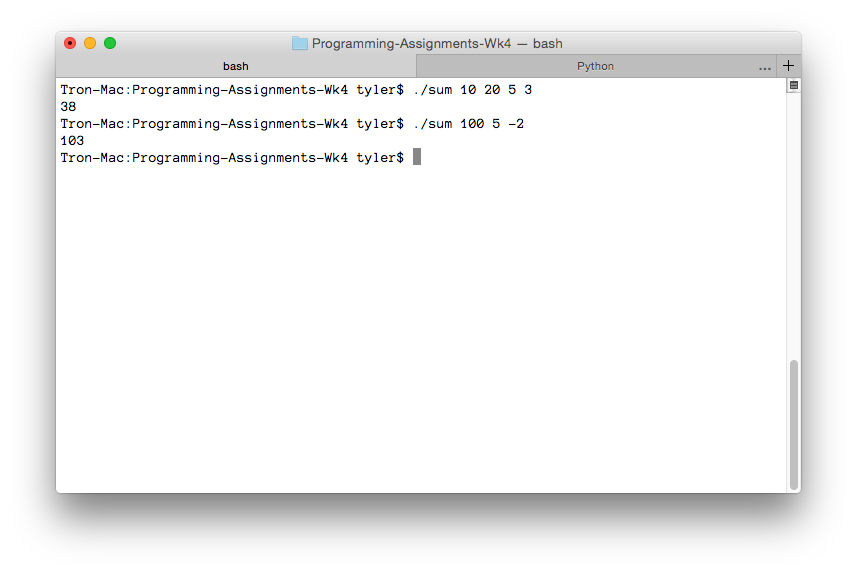

---

layout: default
title: sum

---

{% highlight c++ %}
// Tyler Mumford, 2014
// Adds numbers from outside input

#include <stdio.h>
#include <stdlib.h>

int main (int argc, char *argv[]) {
	int i, sum = 0;

	for (i=0; i<argc; i++) {
		sum += atoi(argv[i]);
	}

	printf("%i\n", sum);

	return sum;
}

{% endhighlight %}


